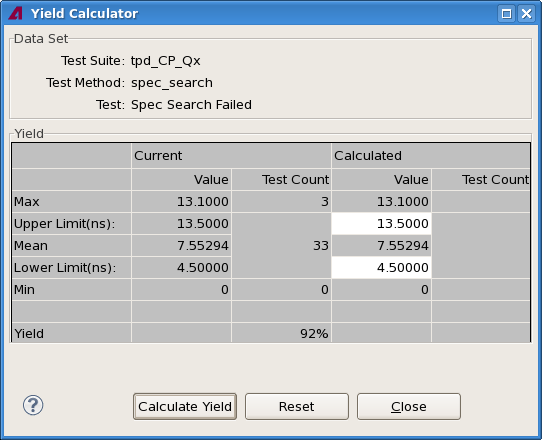

Yield Calculator
The Yield Calculator dialog lets you determine which limits result in which yields for a given test.
The dialog is opened from a test summary view with the Yield Calculator shortcut menu command.

The calculator consists of these sections:
- Data Set: The test suite, test method, and test name of the selected row.
This is the test for which the Cpk value or limits will be calculated.
- Yield: The actual and hypothetical limits and resulting yield values.
There are two halves in this section:
- Current: The values with which the test was performed and the resulting yields.
- Calculated: Limits you enter and the yield results if the test had been performed with
these limits.
Both halves contain two columns:
- Value: The values for the limits and measurement extremes.
- Test Count: The number of devices that lie above the upper limit, between the two limits,
and below the lower limit, respectively.
The rows contain these values:
- Max: The highest measured value.
- Upper Limit: The upper limit for the test. In the Calculated section, you can change this value by double-clicking the field.
- Mean: The mean measured value.
- Lower Limit: The lower limit for the test. In the Calculated section, you can change this value by double-clicking the field.
- Min: The lowest measured value.
- Yield: The calculated yield, given the limits.
The yield is the ratio of devices testing between the upper and lower limit to the total number of tested devices.
The calculator contains these buttons:
- Calculate Yield: Clicking this button calculates the yield value in the Calculated section based on the limits specified in that section.
- Reset: Resets the values in the two editable fields to the actual limits from the selected test (that is, the values that are displayed in the corresponding fields in the Current section).
- Close: Closes the calculator window.
Functional changes
- Introduced in SmarTest 7.2.2